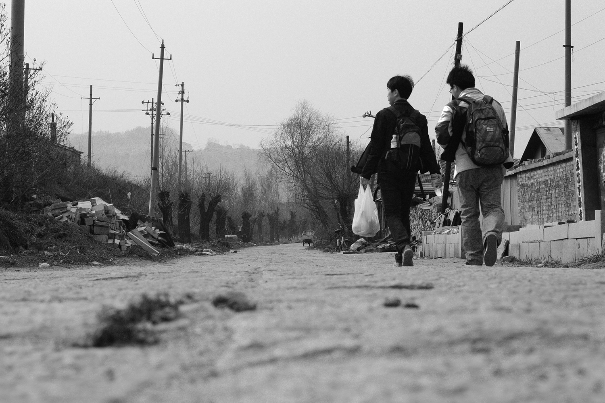

云南是个不缺歌声的地方，人们累了唱歌，困了唱歌，伤心了唱歌，开心了也唱歌，陌生人唱着唱着就成了朋友，不熟悉的地方唱着唱着就成了故乡。
—— 燕子
云南印象
我对云南的印象是小时候从电视里看到的西双版纳的美丽的热带景观里树立的。再到后来，因为一部电影喜欢上了大理古城，喜欢上了丽江，喜欢上了香格里拉，我喜欢这些地方并不是因为电影情节那样的所谓的艳遇，流浪或者暧昧，而是因为那种悠闲而又惬意的田园风光。
我憧憬着天的湛蓝，水的清澈，人的纯真，憧憬着这里的一切。在云南，下关风，上关花，苍山雪，洱海月。多么有诗情画意的地方，总是带给人无限的喜悦和向往。大学毕业那年，我做好了安排准备了一场毕业旅行。目的地就是大理，充满着文艺气息的地方。但最后还是因为种种原因没有去成。这样的愿望就被一直搁浅在了心中，我想等下一次实现的时候，应该是和心爱的人一起去见证那里的一切吧。
旅行的意义

我有过几次旅行。曾有独自一人背着相机到一个陌生的城市探索它的美丽和未知；也有曾和朋友欢声笑语的度过“人在囧途”的不堪；有感叹自然鬼斧神工的创造力，也有深思历史长河的每一刻都是什么样子。它们带给我的除了心神愉悦，还有思考和感悟。每一次旅行总会带给自己不同的体验。独自一人时的孤单，成群结队时的谈笑风声，骑着单车时的无忧无虑，带着心爱的人时一起旅行时的流连忘返。
你有什么样的心情，就能看到什么样的风景。
依稀记得有次和室友去牡丹江，因为没有钱，连门票都舍不得买，就逃票进威虎山被查出来的尴尬和无奈。所以即使风景再美，看风景的心情全无。事后我在想，那么年轻人，都追求着穷游，那穷游的意义在哪里？到了想去的地方，却因为没有钱住着最差的旅店，在景区门口晃一圈，这样未免会给自己留下遗憾。这不是真正的旅行。甚至于在我的心中，那些穿梭于人山人海的走马观花都是徒劳的，只会让自己心神疲惫。
有时候旅行的真正意义不在于去什么地方，而是你带着怎样的心情去旅行。就像燕子说的，不论在哪里，其实“从来都藏了好多不轻易拿出来的美景，只等有心人”。真正的旅行，对于我来说，它带给我更多的大概是在途中给你思考，给你心灵的震撼，甚至洗礼，使我看到以往没有看到的东西，领略到以往未曾领略的人生哲理。
时光荏苒
这世上真正属于你的东西是你的时光，无论任何风景人物对话都只是陪衬，只有你自己可以决定以什么情绪参与。
我想趁着还年轻，趁着还有大好时光，去那些自己未曾去过的，向往的地方，来一场真正的旅行。
16年7月20日记